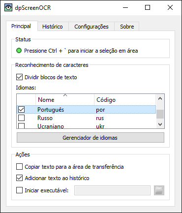

dpScreenOCR
dpScreenOCR é um programa para reconhecer textos na tela. Através do Tesseract, ele suporta mais de 100 idiomas e pode dividir blocos de texto independentes, como colunas. Leia o manual para instruções de instalação, configuração e uso do programa.
Baixar versão 1.4.1 (alterações, licença):
Contribua participando da tradução ou desenvolvimento.